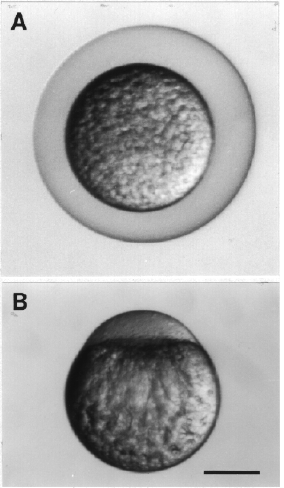

Modified from: Kimmel et al., 1955. Developmental Dynamics 203:253-310. Copyright © 1995 Wiley-Liss, Inc. Reprinted only by permission of Wiley-Liss, a subsidiary of John Wiley & Sons, Inc.
Fig. 3. The zygote period. A: The zygote within its uplifted chorion, a few minutes after fertilization. B. The dechorionated zygote with the animal pole to the top, about 10 min after fertilization. Yolk-free cytoplasm has begun to segregate to the animal pole. Scale bar: 250 µm.

Figure 3